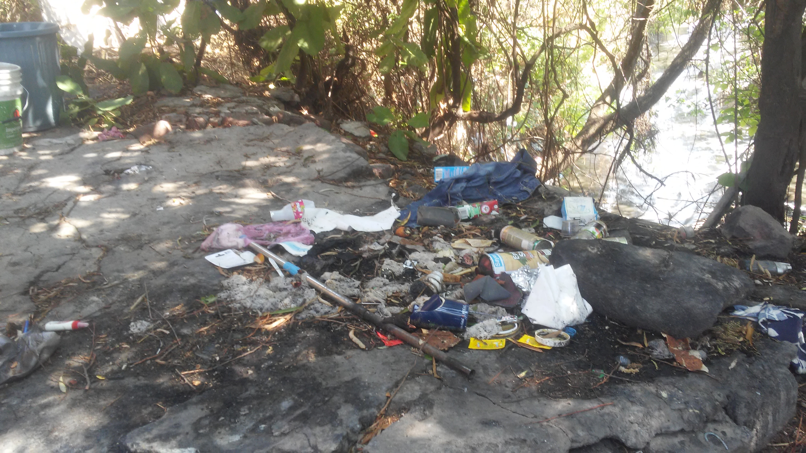

Esta es mi comunidad
Es la incorporación a la atmósfera de gases tóxicos y elementos que transforman la composición natural del aire que respiramos
Se produce por el vertido de sustancias contaminantes tóxicas y nocivas, como productos químicos, aguas fecales, residuos industriales, y microorganismos, que inhabilitan el agua como recurso básico para la vida
mediante la incorporación de sustancias y materias extrañas procedentes de basuras domésticas, residuos tóxicos industriales, pesticidas, lodos, restos o envases plásticos y metálicos, escombros, y otra serie de elementos
Los virus, hongos y otros parásitos.
Es la producida por variaciones bruscas de temperaturas, radiaciones electromagnéticas, o nucleares, intensidad luminosa, sonora y vibraciones, entre otros.
Es la que se produce por el vertido de elementos químicos y compuestos de estos.
Producida por el impacto negativo en el entorno generado por edificación masiva o con ubicaciones desafortunadas, desertización, o almacenamiento indiscriminado de residuos
Entre las causas de la contaminación más graves está el envenenamiento de especies marinas y terrestres y el consiguiente peligro de intoxicación de los alimentos procedentes de la agricultura, pesca y ganadería necesarios para abastecer a una población mundial en constante aumento.
El aumento constante de la temperatura media del planeta, es otra de las graves consecuencias de la contaminación del aire.
Aumento del nivel de los mares como efecto del deshielo de los casquetes polares, con desaparición de grandes extensiones geográficas.
Desaparición de la capa de ozono que protege a la tierra de las radiaciones directas del sol por efecto de los agentes contaminantes en el aire, con resultados de cambio climático, desertización de grandes zonas, subida de temperaturas anuales, desaparición de las placas de hielo en los casquetes polares, aumento de fenómenos meteorológicos de violencia incontrolable.
consiste en obtener una nueva materia prima o producto, mediante un proceso fisicoquímico o mecánico, a partir de productos y materiales ya en desuso o utilizados. De esta forma, conseguimos alargar el ciclo de vida de un producto, ahorrando materiales y beneficiando al medio ambiente al generar menos residuos.
Qué debemos depositar:
Periódicos, libros, sobres, revistas y otros papeles.
Bolsas y envases de papel, cajas de cartón, que deben plegarse antes de depositarlas.
Hueveras de cartón.
Qué NO debemos depositar:
Envases mixtos de papel y plástico, bricks.
Papeles muy sucios, como los de cocina usados o manteles de papel.
Corcho blanco
Qué debemos depositar:
Envases tipo brick (leche, zumos…).
Botes, latas y envases metálicos.
Botellas, garrafas, tapones y otros envases de plástico.
Aerosoles y sprays.
Papel de aluminio y film.
Bandejas de carne o fruta de corcho blanco (forespan o porexpan).
Redes de la fruta o patatas.
Guantes de goma (“de fregar”).
Qué NO debemos depositar:
Botes de pintura o productos químicos.
Qué debemos depositar:
Botellas de vidrio.
Tarros y frascos de conservas.
Jarras y copas de vidrio.
Qué NO debemos depositar:
Tapones de botellas y botes.
Fluorescentes y lámparas.
Espejos o cristales de ventanas.
Botes de medicamentos.
Botes que hayan contenido productos tóxicos o peligrosos
Qué debemos depositar:
Restos de comida.
Huesos y pieles de frutas y hortalizas.
Posos y filtros de café.
Sobres de infusiones.
Cáscaras de marisco y moluscos.
Tapones de corcho.
Cáscaras de huevo.
Papel de cocina y servilletas de papel utilizadas.
Restos de plantas y flores.
Cáscaras de frutos secos.
Palillos.
Cerillas.
Qué NO debemos depositar:
Aceite de cocina.
Residuos de barrer.
Colillas.
Pañales y productos de higiene femenina.
Excrementos de animales
Qué debemos depositar: Residuos de barrer. Colillas. Pañales y productos de higiene femenina. Cuchillas de afeitar Cepillos de dientes. Chicles. Bolsas de aspiradora Fregonas y bayetas Excrementos de animales. Qué NO debemos depositar: Juguetes. Pilas. Ropa
Caminar o manejar bicicleta siempre que sea posible
Hacerle un mantenimiento periódico al auto
Apagar las luces y los aparatos electrónicos cuando no estés en la habitación.
Utilizar una menor cantidad de productos químicos.
Desechar correctamente los residuos tóxicos
Conservar el agua.


 1
1 2
2 4
4 5
5 6
6 7
7


 1
1 2
2 3
3 4
4